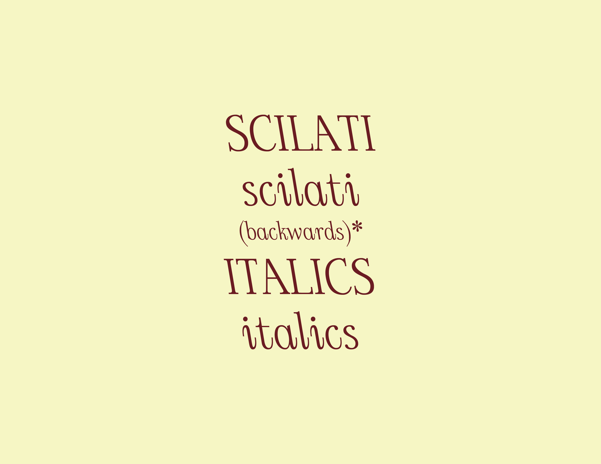
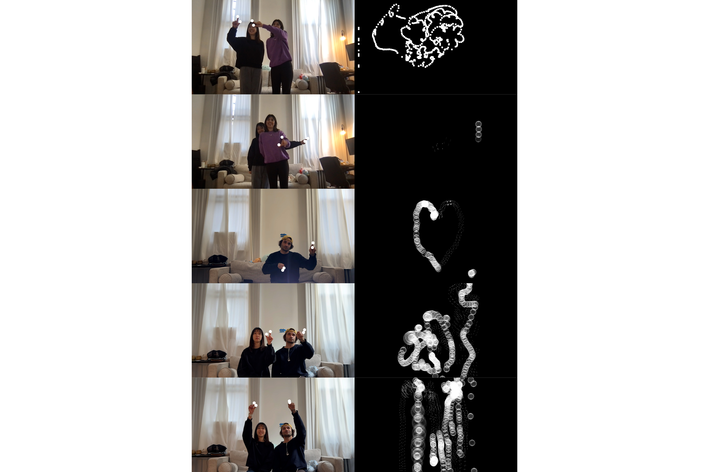
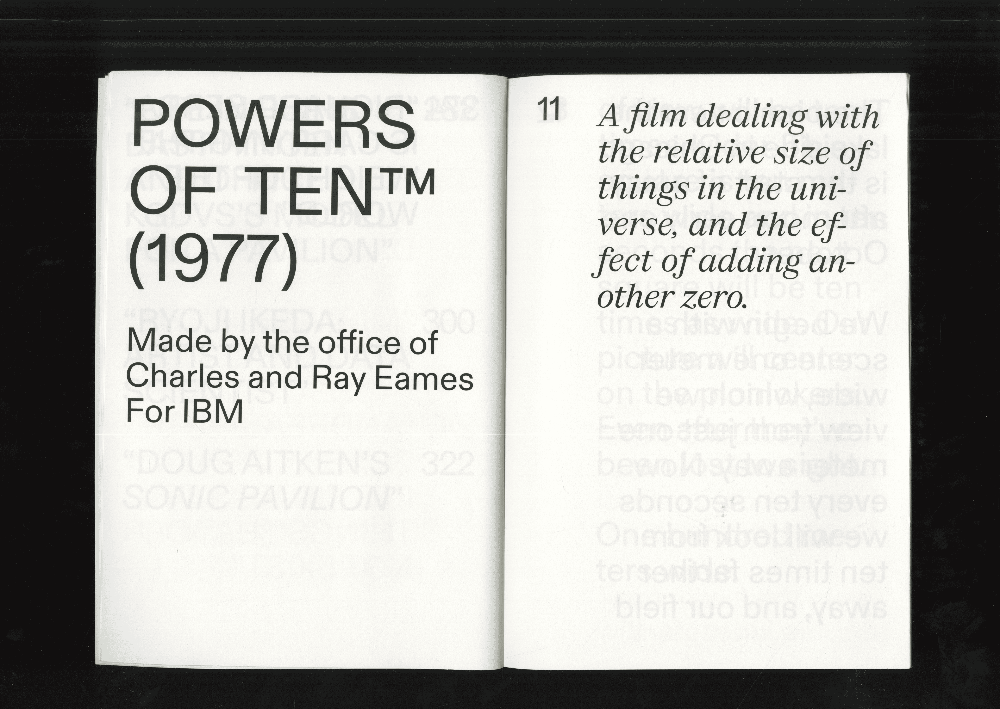
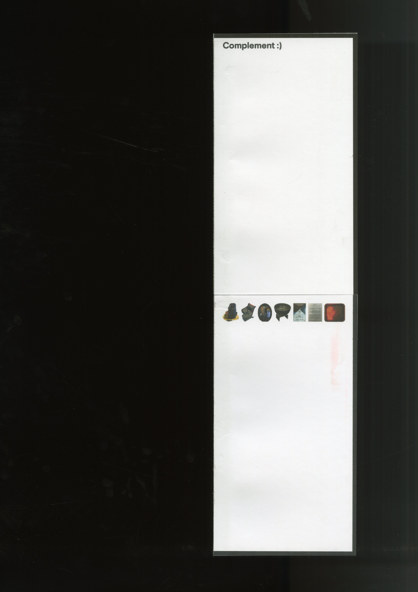
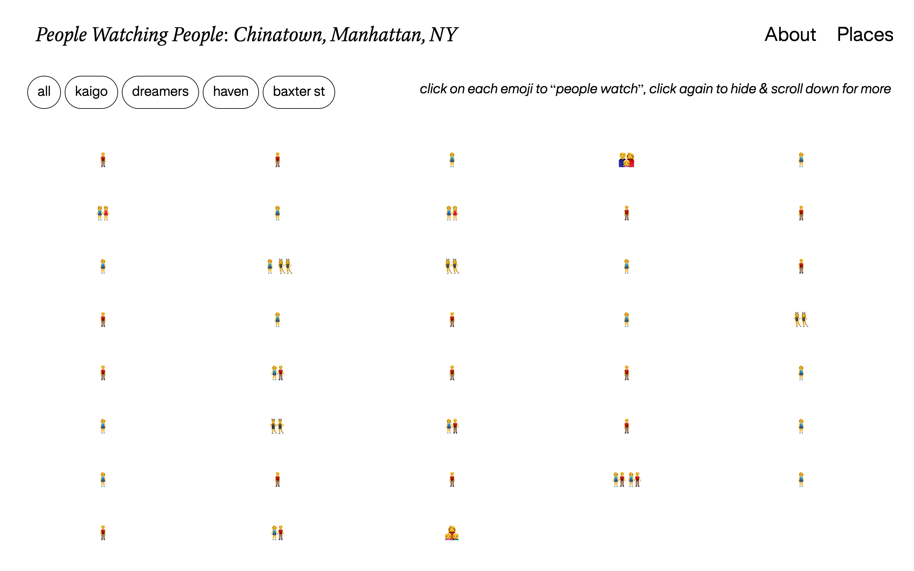
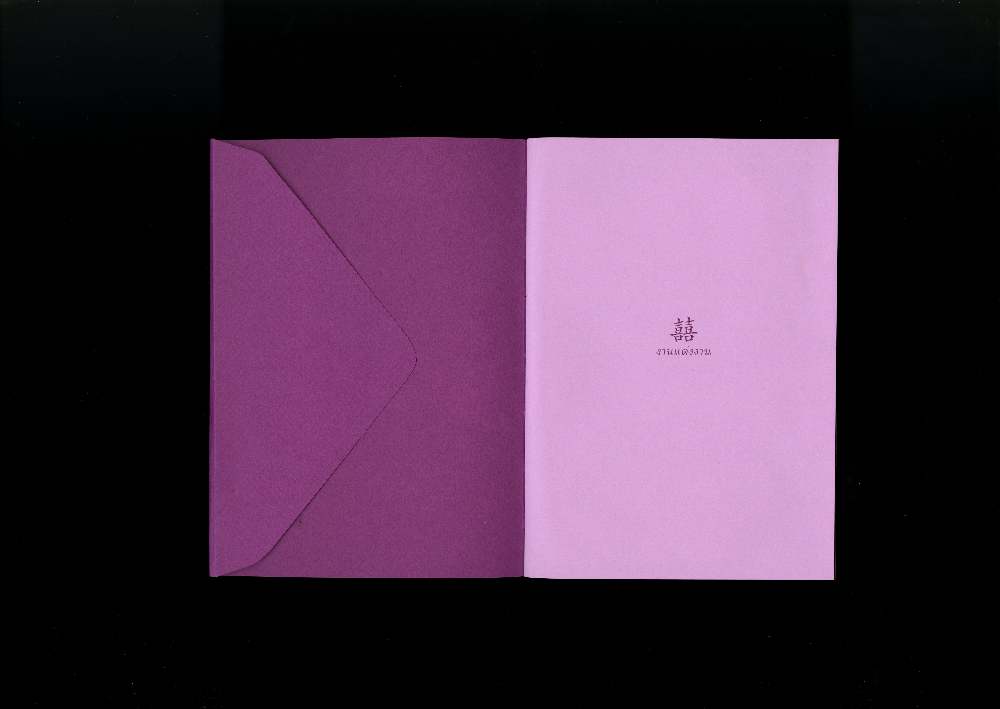
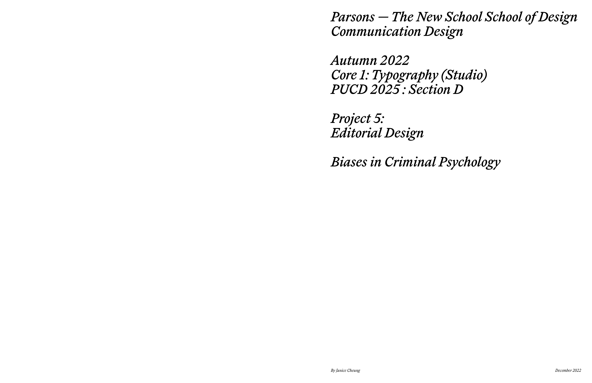
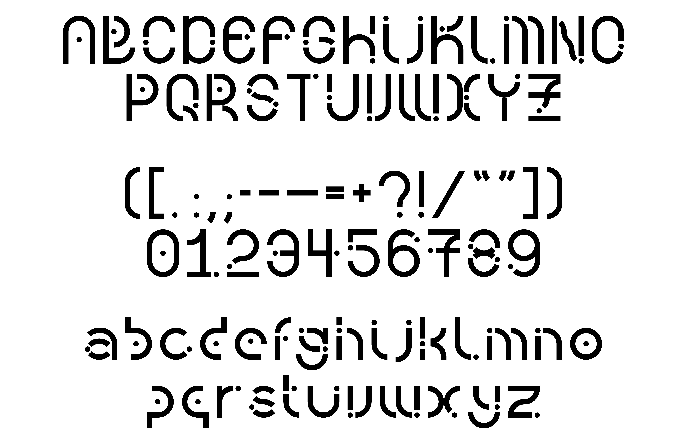

i heart books and making books, so let’s bind some together (Oct 2025)
A bookbinding manual compiling techniques from artist-educator Sarah Nicholls, combining instructional content with visual documentation—a project that deepened my understanding of how editorial design guides readers through complex information.

scilati (May 2025)
A serif typeface that slants to the left, challenging the conventional notions of italicization, which usually leans right.

Drawing Conversations (May 2025)
My thesis, Drawing Conversations explores how interactive, tactile experiences can counter the social isolation of our screen-mediated lives, drawing on Derek Thompson's The Anti-Social Century. Through participatory prompts, sensory exploration, and creative movement, I designed a space for in-person, hands-on connection that doesn't reject technology but rediscovers the role of physical gesture in expression and shared meaning.

1903 film sequence (Sep 2024)
An unedited 35mm film roll from summer of 2024, presented in an accordion format with fold-out sections. This artist's book preserves the film's original dimensions to demonstrate how moments connect and flow through time as they were originally captured.
* available for purchase! contact me for more info :P

Manifesto: Designer as Curious George (May 2024)
A motion graphic for Constantin and Laurene Leon Boym's "Manifesto #16: Designer as Curious George" from the design manifestos collection. This manifesto uses the character Curious George to illustrate how designers should always be driven to play, experiment, and embrace failure as a learning experience.
A Play with Motion & Sound (Feb 2024)
A collaborative "music video" using the given music piece by combining shapes and movement techniques to illustrate synesthesia and cause and effect. I aimed to align the visuals with the music, considering composition, sequence, and color palettes. Each student animated an assigned music segment and also created the opening title and closing credits for the class compilation using After Effects.
hands (Oct 2023)
Shot on 16mm film. Moving from the everyday rhythm of pedestrian life to the charm of artistic moments, the film reaches its peak with hands in a lively dance. Each frame shares the unique stories held in the hands of a lively city, unveiling a new tale in every shot.
Magnification (Nov 2023)
This project investigates the microscope as an instrument of revelation, one that reveals the complexities of the invisible, how magnification embraces what is not apparent and reveals an intricate web of sophistication and elegance woven into even the smallest elements, where each magnified imagery turns the ordinary into something extraordinary. A digital form of the book is also created to explore the same concept and content but on a screen.

Complement :) (Oct 2023)
This project (publication & website mockup) takes a closer look at the intricate connection of elements, showing how even those with less innate value on their own can enhance and elevate something else, eventually improving that “something else.” It is about the underlying relationships and the narratives, how each small, simple thing can develop and expand to become a part of an interesting story and add to a more vibrant whole. So a lot of things in our environment contributes to creating a narrative, enhancing an experience, and ultimately, making something better.

UFC 287: Pereira vs Adesanya 2 (Apr 2023)
Event poster printed on the letterpress for UFC 287: Pereira vs Adesanya 2, a mixed martial arts event by the Ultimate Fighting Championship that took place at the Kaseya Center in Miami, Florida on April 8, 2023.

People Watching People: Chinatown, Manhattan, NY (Apr 2023)
(project 2. intx w/ data: Elastic Collection)
Any time you see a multiplicity of an object, you begin to notice similarities and contexts in a new way. Seeing multiple of an object allows for this kind of in depth research that observing one object does not. The way the object is documented and organized helps direct the viewer on how the object is meant to be experienced.
This project investigates the themes of privacy through people-watching. The aim of this project is to gather and organize a collection of data, understand metadata, to tell a story through content curation and order, to experiment with interactions with a collection, and to develop a working relationship of JavaScript objects and data collections.
* all data is pulled from a JSON file and uses JavaScript & is responsive and function on a mobile screen

Home (Apr 2023)
A 48-page zine on Chinese and Thai wedding traditions. As someone with Chinese and Thai heritage, this developed from my interest in these cultures' wedding traditions and cultures.

Biases in Criminal Psychology (Dec 2022)
A 50-page publication based on a selection of articles from a credible online newspapers and magazines.

Typographic Contrast (Oct 2022)
A booklet delving into the artistic impact of typographic contrast, offering a comprehensive study of its formal effects, diverse visual outcomes, and layout design in a multipage format.

Modular Typeface (Sep 2022)
A distinctive typeface constructed by merging modular components using fixed units and an underlying grid, exploring the defining characteristics of each letter and the visual cohesion created by repeating elements.

I DON'T KNOW YOU (YET) (May 2022)
The card game “I DON'T KNOW YOU (YET)” aims to foster vulnerability and deep conversations, providing a safe space for transparency and meaningful connections through three levels of questions and wildcards, with a pastel color palette reflecting openness and relaxation.

ANAIA 2019 x LEVI'S (Feb 10 ,2018)
ANAIA is Island School's annual student-led fashion show, supporting a charity, Maggie's Cancer Caring Centre. To acknowledge the collaboration between Levi’s®️ and ANAIA 2019, this promotional video was designed to capture how the Levi’s®️ brand epitomizes classic American style and effortless cool, and to celebrate self-expression and individuality through their clothing.
Produced in Hong Kong.
Director, cinematographer (w/ SeeWing Chun), and editor.
thank you for looking at my page, hope you enjoy! ✨